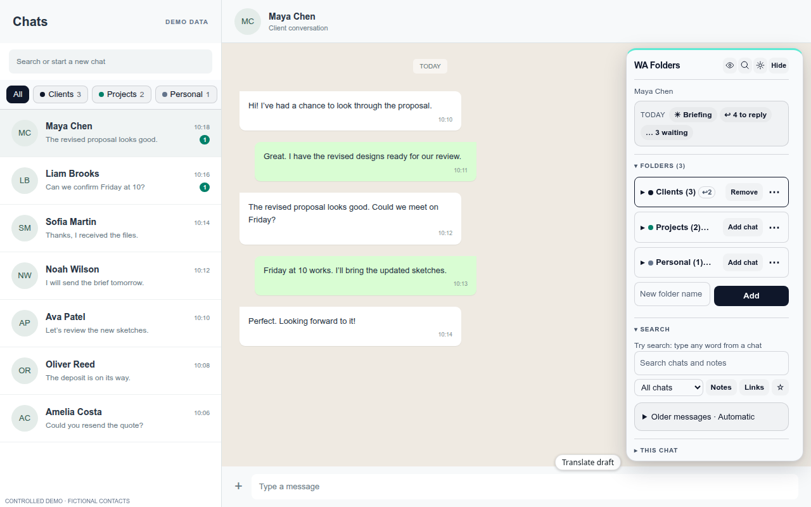
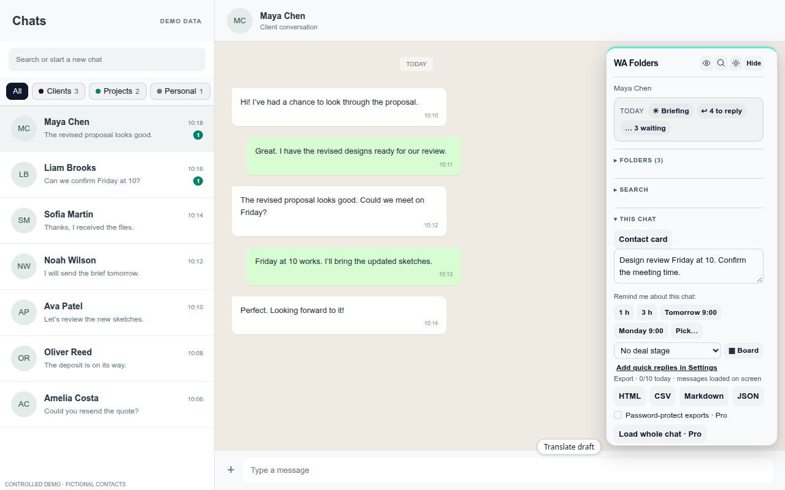
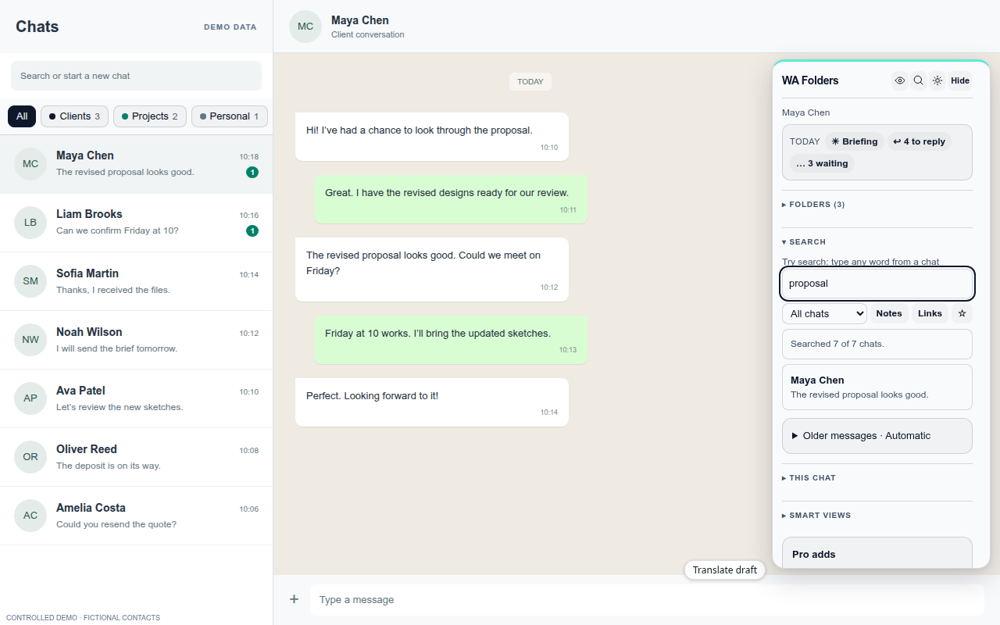
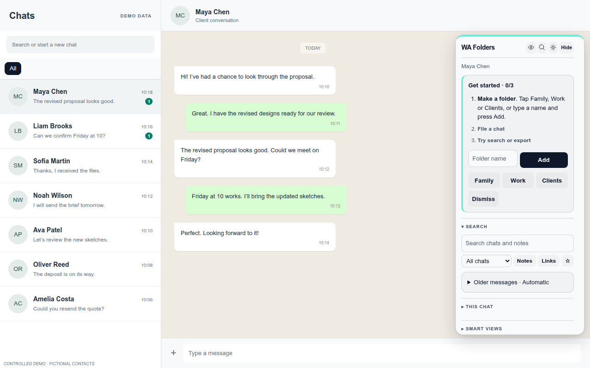

WA Folders · For value-first evaluators
Paying for folders? Know what you’ll use.
Start with the work you need to organise. Try the free features within their limits, then compare the extension’s current plan details with the capacity you actually need.
Chrome Web Store: 1.0/5 from 3 ratings, supplied snapshot dated November 4, 2026 (not rechecked). Read the critical feedback below before installing.
Add WA Folders to ChromeFree plan available. Works on WhatsApp Web on your computer.
A little order for your conversations
7 ways to check the fit before upgrading.
Keep using WhatsApp Web. Add folders, follow-ups and a way back to the things you need.
Separate work, family and everything else.
Put chats into your own folders, with colours and emoji. Folder tabs sit above the chat list, so you can focus on the conversations that belong together.
Your folders live in this Chrome profile.
WA Folders 2.1.0 UI · fictional demo data. Write the familiar reply without starting over.
Save quick replies and insert them into the message box when you need them. Name tokens can personalise the text. Read it, edit it and send it yourself.
WA Folders never presses Send.
WA Folders 2.1.0 UI · fictional demo data. Let a follow-up come back when it matters.
Choose “remind me if they don’t reply” after you send a message. The reminder clears when WA Folders sees their reply. If you’re still waiting, the chat appears under Due. You can also set a reminder for a time you pick.
Desktop notifications are optional.WA Folders 2.1.0 UI · fictional demo data. See who’s waiting on you.
Needs reply, Questions for me and Waiting on them help you spot unfinished conversations. The Today line brings those counts together with your due reminders. Open chats to help WA Folders learn their latest state.
Based on the chats and messages the extension has seen.WA Folders 2.1.0 UI · fictional demo data. Find the detail without reopening every chat.
Search chat names, private notes and message text WA Folders has seen. Filter by folder, notes or links. Keep a private note on a chat so the context you need is there next time.
Search is local. Coverage stays partial and depends on what WhatsApp Web returns. Pro Load whole chat can collect older messages in the open chat, subject to technical limits.
WA Folders 2.1.0 UI · fictional demo data. Keep a useful record outside the chat.
Export the open conversation as HTML, CSV, Markdown or JSON. The export uses loaded messages; media is labelled. Pro adds Load whole chat, whole-folder exports and password-protected exports, subject to technical limits.
Choose a readable document or data for your spreadsheet.WA Folders 2.1.0 UI · fictional demo data. Organise your chats without another account.
Folders, notes and the search index stay in this browser profile. There’s no WA Folders account, no WA Folders server and no analytics. Optional features, including your own AI provider and Pro Chrome Sync, move data only when you choose to use them.
The privacy policy explains what each optional feature shares.
WA Folders 2.1.0 UI · fictional demo data.


Check it for yourself
Real features. A real store listing.
WA Folders is listed on the Chrome Web Store, where you can check its product details, permissions and available reviews before installing.
Read the privacy policy for local storage, optional AI providers, Chrome Sync, exports and license checks. The free plan includes 5 folders, 20 search hits, 3 exports a day, 1 board, 5 active follow-ups and 1 briefing a day.
Older messages, with clear limits
Search covers chat names, your notes and the messages WA Folders has seen in chats you opened. Pro adds Load whole chat, which scrolls the open chat so WhatsApp Web can load older pages into search and export. Coverage stops where WhatsApp Web stops; it does not pull history from your phone.
Load whole chat stops at 20,000 messages, or sooner if you press Stop or nothing new arrives. WA Folders never sends messages for you.
Try the free features before choosing more.
Use the free tier within its feature limits. Decide whether Pro’s extra capacity, manual whole-chat loading, protected exports or sync fits your work. Review the current plan details inside the extension.
Ratings before upgrades
The Chrome Web Store showed 1.0 out of 5 from 3 ratings in the supplied November 4, 2026 snapshot. The three accessible written reviews raise concerns about price, history search and free capacity.
Value and price
Havillah Dishes challenged the value. The developer disputed the price described.
Finding older messages
Hevron Yerotarnia wanted broader history search. The developer acknowledged the seen-message limitation.
Free capacity
Richchild Abayomi criticised free limits. The developer disputed the folder allowance cited.
These are critical reviews, not endorsements. Read the reviews and developer responses together before deciding.
This is a dated snapshot, not a fresh rating check. We do not claim the score has improved or that reviewers have changed their views.
Try Free on the Chrome Web Store and read the full reviews before deciding whether to upgrade.
Free to try. Pay once to unlock everything.
No subscription. Every limit message in the extension has an Upgrade button, so you can decide when you hit one.
Free
Everything, with daily allowances.
- 5 folders
- 20 search hits
- 3 exports a day
- 1 board
- 5 active follow-ups
- 1 briefing a day
- 5 voice-note transcriptions a day
- 20 translations a day
- Today line, Waiting on them, privacy blur
Pro
- No limits on anything in the Free column
- Manual Load whole chat and whole-chat export, subject to available history
- Whole-folder and password-protected exports
- PIN lock screen
- Sync folders between your Chrome browsers
- One-time $4.99, no subscription
No WA Folders yet? Add it to Chrome free first, then unlock.
After checkout, paste your license key (starts with WAF-) in the WA Folders toolbar popup. How activation works.
Local only: your chats, folders and notes stay in Chrome on your computer (privacy policy). Every release is in the open changelog. Questions: toolshed+wafolders@mail.grokbot.com.
| Free vs Pro | Free | Pro |
|---|---|---|
| Folders (tabs above the chat list) | 5 | Unlimited |
| Search hits per search | 20 | All indexed results; Load whole chat |
| Chat exports | 3 a day, loaded messages | Unlimited, whole chat, whole folder, password-protected |
| Deal boards | 1 | Unlimited |
| Active follow-ups | 5 | Unlimited |
| Briefings | 1 a day | Unlimited |
| Voice notes to text | 5 a day | Unlimited |
| Translations | 20 a day | Unlimited |
| AI catch-up and reply drafts | 3 a day | Unlimited |
| Quick replies / auto-file rules | 3 / 1 | Unlimited |
| Deal board chats / saved searches | 5 / 1 | Unlimited |
| PIN lock screen | - | ✓ |
| Sync between your Chrome browsers | - | ✓ (off by default) |
| Today line, Waiting on them, Questions for me | ✓ | ✓ |
| Privacy blur and hide shortcut | ✓ | ✓ |
| Price | $0, no time limit | $4.99 once |
Limits on every plan: Load whole chat stops at 20,000 messages, one export keeps the newest 5,000 loaded messages, a folder export opens up to 100 chats, and voice notes over 15 minutes aren't transcribed.
Questions before you start
Does this work in WhatsApp on my phone?
WA Folders runs on WhatsApp Web in Chrome on a computer. Folders stay in this Chrome profile and do not appear in the phone app.
Will it search every message I have ever sent?
Search covers chat names, notes and message text WA Folders has seen in chats you opened. Coverage stays partial and depends on what WhatsApp Web returns. Pro Load whole chat can collect older messages in the open chat, subject to technical limits.
What happens to a follow-up when they reply?
When WA Folders sees their reply, it clears a conditional follow-up. If the reply has not arrived by the chosen time, the chat appears under Due.
Is the free plan unlimited?
No. The free plan includes 5 folders, 20 search hits, 3 exports a day, 1 board, 5 active follow-ups and 1 briefing a day. Other feature allowances and technical limits still apply.
Does it send messages for me?
No. Quick replies go into the message box for you to review and send yourself.
Where is my data stored?
Folders, notes and the search index stay in your browser profile. Optional AI providers, Chrome Sync and license checks can move specific data. See the privacy policy.
Give your next follow-up a place to land.
Install WA Folders, open WhatsApp Web and start with the conversations waiting on you.
Add WA Folders to ChromeFor Chrome on a computer. Folders don’t appear in the WhatsApp phone app.